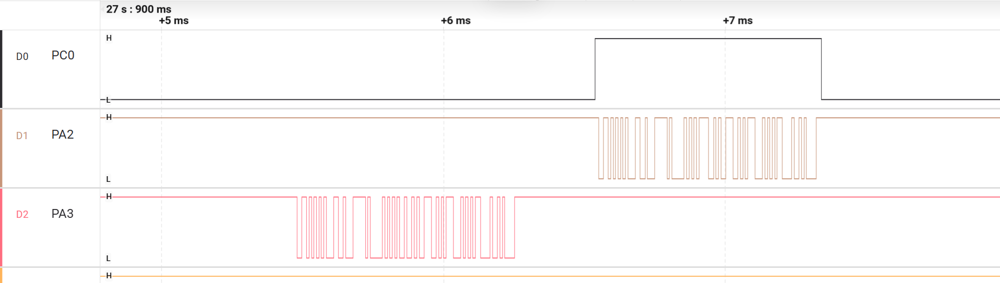

01 / 项目概览
把采集、通信和故障诊断连成可观察、可验证的闭环。
个人项目 · C / HAL / Keil · 2026.07 至今
USART2/RS485处理CRLF成帧、超时与重同步，TC后释放半双工方向；CAN2接收中断入队，主循环校验并回复温湿度。Fault保留异常现场，IWDG按健康状态决定刷新。
复用SHT30驱动，采集任务与上报任务通过容量1覆盖邮箱交换最新值。质量、序号、年龄和失败阶段共同解释数据状态。
| 硬件 | 野火STM32F407ZG霸天虎V2、SHT30、CH340、USB-RS485 / USB-CAN |
|---|---|
| 工具 | Keil / ARMCC 5.06、Watch、逻辑分析仪、PCAN、Python |
| 分层 | Core装配；Application策略；Components器件协议；BSP板级资源与HAL适配 |
在线源码、设计案例与完整日志：
github.com/tmhcyber/stm32f407-data-terminal
02 / 量化结果
RS485另完成连续1000/1000轮。各通信窗口的PC超时、错误与跳过时隙均为0；正式窗口前30分钟两条总线并行，SHT30采集与UART上报持续运行。
| RS485 | 115200 8N1；精确V1|PING / V1|PONG，CRLF结束 |
|---|---|
| CAN | 500 kbit/s；标准数据帧123h / 1 / 01请求，322h / 5响应 |
| 业务校验 | 检查ID、类型、DLC、温湿度编码和VALID质量，完整应用响应计为成功 |
| 统计依据 | 原始TX/RX、逐轮判定、连续轮号和汇总独立核对一致 |
| 窗口 | 实际时长 | PC RTT P95 | 最大RTT |
|---|---|---|---|
| RS485连续1000轮 | 2.332秒 | 2.465 ms | 3.953 ms |
| RS485一小时 | 3600.001秒 | 2.491 ms | 6.521 ms |
| CAN1800次 | 1799.023秒 | 2.875 ms | 3.503 ms |
RTT包含USB、PC调度和日志处理；周期以逐轮发送时间核对。板端采样推进由UART中的MCU时间戳核对。
保留完整压缩日志、UTC与单调时间、执行脚本快照及固件/脚本SHA256。实测基线9688122+dirty，固件AXF指纹340c1383…119374；完整标识和校验结果在每项记录中提供。
证据入口：Docs/TestRecords/2026-10-22_communication_01/RESULTS.md
独立核验：verification.json；主机检查按Python、生产C断言及CAN场景分类列示。
03 / 从现象推导根因
主循环旧时间与ISR新时间交错，首字节被误判超时。
PC超时，PA3请求完整，PC0保持低，PA2没有输出。Watch为RX9、完整帧1、超时1、语义无效1、有效PING0、UART错误0。我先确认请求到达，再定位到产生回复之前的应用处理。
主循环先保存now_ms=1000，ISR随后记录首字节1001。无符号差变为大数，超过100ms阈值并清除V；剩余1|PING仍可成帧，却匹配失败。
主循环 now=1000 → ISR rx_tick=1001 → 消费事件 uint32_t(1000 - 1001) = 4,294,967,295 原判定：差值 ≥ 100 ms → 假超时 → 丢失首字节
先要求模差小于0x80000000，再比较100ms阈值。该方案区分未来半区时间戳与正常经过时间，恢复精确PONG。
TC在最后停止位完成后触发，随后释放PC0；TXE表示数据寄存器空。对照正常响应波形，核对方向控制与实际线时。

正常响应回归波形：PA3请求 → PC0拉高 → PA2响应 → PC0拉低。9字节、115200 8N1理论线时0.781ms，方向高电平约0.80ms。
后续验证覆盖分段、超长重同步、UART ORE恢复与A/B极性对照；2026-10-22 HSE版进一步完成连续1000轮和一小时36000轮。
诊断依据：docs/CASE_RS485.md，Application/Src/app_rs485_service.c，evidence/rs485_tc.png。
04 / 任务与数据交换
根据显示当前温湿度的目标，我选择容量1覆盖邮箱，编写测量启动、转换等待、读取、换算和成功发布核心流程，并用诊断记录解释失败与恢复。
A每轮末延时1秒，B上报后延时3秒，周期包含工作耗时；邮箱保持最新值，B已取出的副本独立。诊断更新与复制采用短临界区，外设访问放在临界区外。
| 正常窗口 | 约40秒、14条报告，采集与UART错误字段0 |
|---|---|
| 故障方法 | 运行时地址0x44→0x45→0x44，制造命令NACK并恢复 |
| 响应与恢复 | 4条no_new_data，8条恢复采样；最后旧值seq389，首条恢复seq390 |
| 诊断保留 | 累计fail24；恢复后last0，历史阶段和错误码继续保留 |
| 通信规则与诊断 | RS485状态、超时和恢复规则；独立推导时间下溢；CAN请求校验、编码和队列核心逻辑 |
|---|---|
| 系统策略 | Fault记录接受/消费规则，IWDG健康门控条件与验收选择 |
| 任务与验证 | 最新值邮箱策略、测量与失败记录流程、实板联调及边界验收 |
开发过程中使用Codex辅助实现、适配集成与自动化测试。个人工作按设计决策、核心逻辑、实板联调和根因分析组织，源码与记录分别提供对应依据。